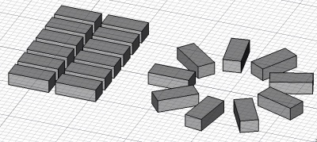

Draft Array
|
| Расположение в меню
|
| Черчение → Массив
|
| Верстаки
|
| Draft, Arch
|
| Быстрые клавиши
|
| отсутствуют
|
| См. также
|
| PathArray
|
|
Description
The Array tool creates an orthogonal (3-axes) or polar array from a selected object. If no object is selected, you will be invited to select one.

How to use
- Select an object you wish to make an array with
- Press the Draft Array button
- Select DATAArray Type: Specifies the type of the array, ortho or polar
- For orthogonal arrays:
- DATAInterval X: The interval between each copy on the first axis
- DATAInterval Y: The interval between each copy on the second axis
- DATAInterval Z: The interval between each copy on the third axis
- DATANumber X: The number of copies on the first axis
- DATANumber Y: The number of copies on the second axis
- DATANumber Z: The number of copies on the third axis
- For polar arrays:
- DATAAxis: The normal direction of the array circle
- DATACenter: The center point of the array
- DATAAngle: The angle to cover with copies
- DATANumber Polar: The number of copies
Scripting
The Array tool can by used in macros and from the python console by using one of the following functions, depending if you wish to obtain simple, standalone copies of your base object, or a parametric array object, that stays linked to the original object.
Simple array
For rectangular array:
array (objectslist,xvector,yvector,xnum,ynum,[zvector,znum])
For polar array:
array (objectslist,center,totalangle,totalnum)
- Creates an array of the objects contained in list (that can be an object or a list of objects) with, in case of rectangular array, xnum of iterations in the x direction at xvector distance between iterations, and same for y direction with yvector and ynum. In case of polar array, center is a vector, totalangle is the angle to cover (in degrees) and totalnum is the number of objects, including the original.
- This function produces standalone copies of the base object(s)
Parametric array
For rectangular array:
makeArray (object,xvector,yvector,xnum,ynum)
For polar array:
makeArray (object,center,totalangle,totalnum)
- Creates an array of the given object with, in case of rectangular array, xnum of iterations in the x direction at xvector distance between iterations, and same for y direction with yvector and ynum. In case of polar array, center is a vector, totalangle is the angle to cover (in degrees) and totalnum is the number of objects, including the original.
- The result of this function is a parametric Draft Array object.
Example:
import FreeCAD,Draft
Draft.array(FreeCAD.ActiveDocument.ActiveObject,FreeCAD.Vector(2,0,0),FreeCAD.Vector(0,2,0),2,2)
{kind=link}
{kind=link}